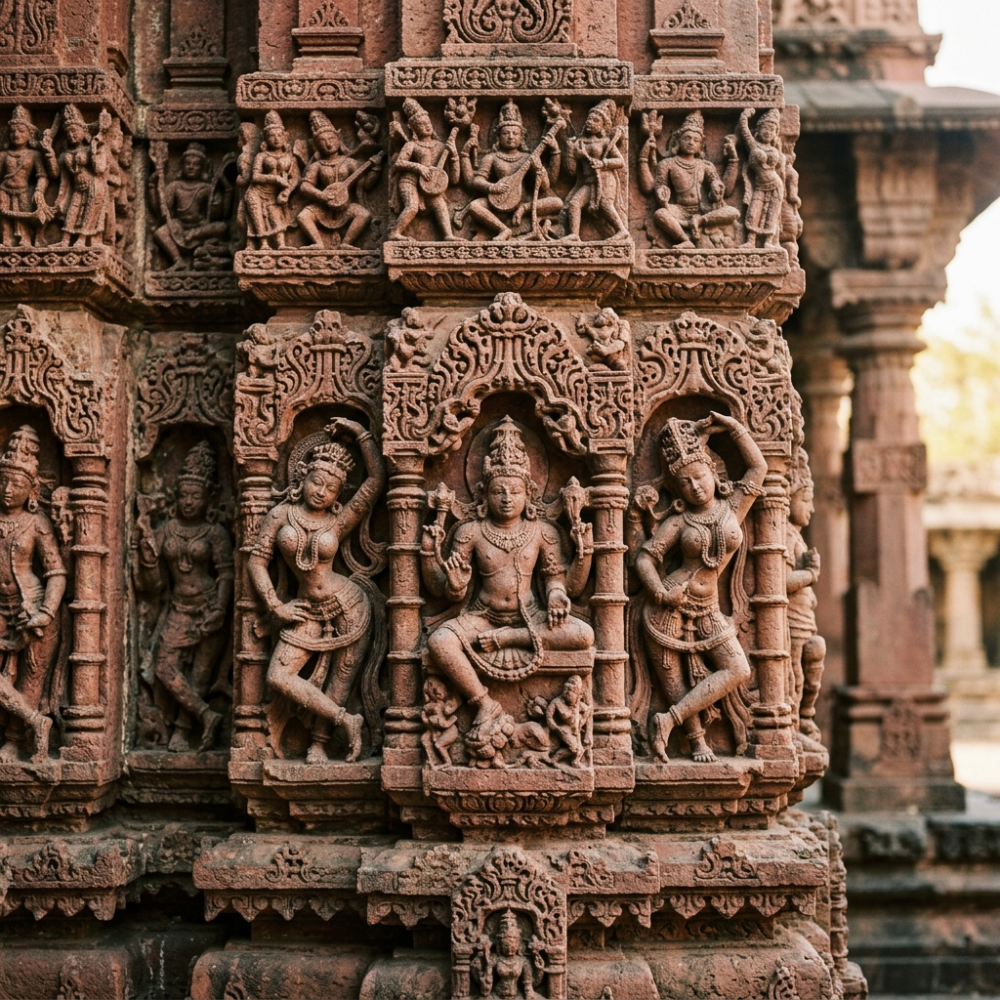
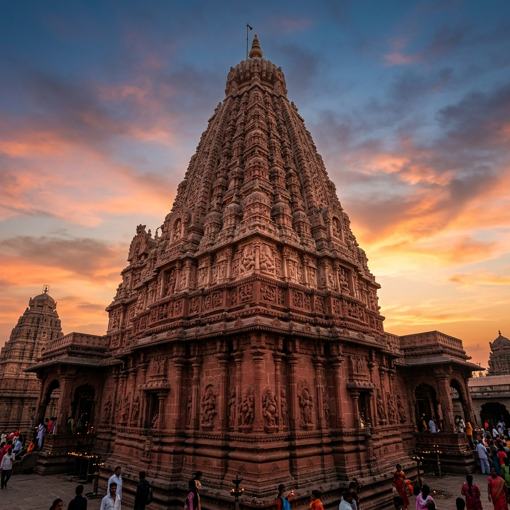
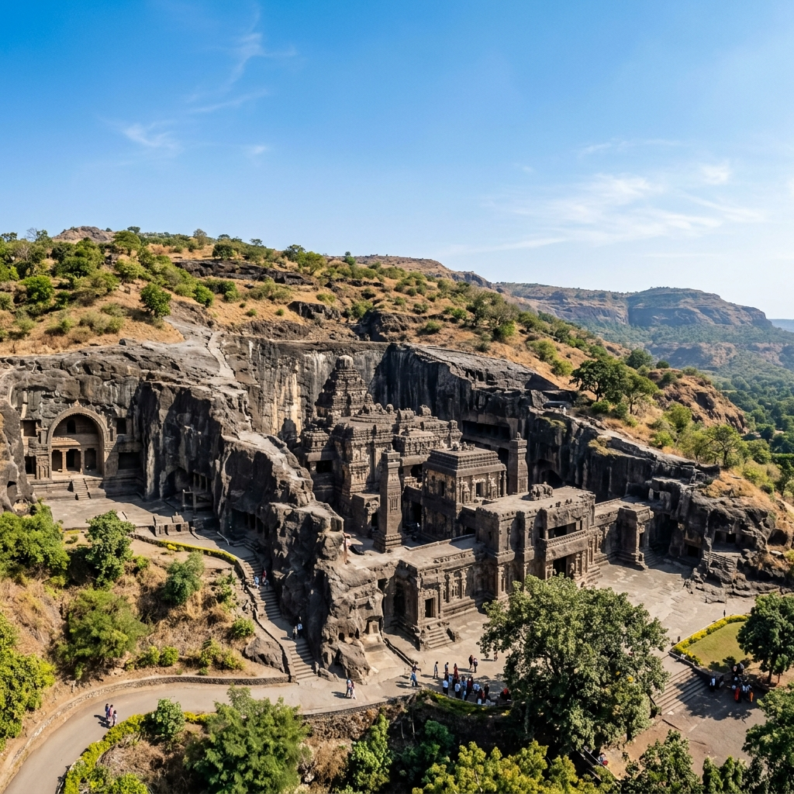

About Temple
Grishneshwar Temple is one of the twelve sacred Jyotirlingas of Lord Shiva and is considered the last Jyotirlinga. Rebuilt and restored by Ahilyabai Holkar, the temple is known for its spiritual significance, peaceful atmosphere, and beautiful red-stone architecture.
The temple's layout and style showcase ancient traditions, where devotees are allowed to enter the core inner sanctum to touch and worship the Shiva Linga directly.
Restoration
Ahilyabai Holkar
Status
Last Jyotirlinga

Major Attractions
Explore the highlights of this sacred Shiva shrine and its surrounding attractions.




Travel Guide
Routes to reach the temple from nearby transit points.
Option 1: Railway Station Transit
Aurangabad Railway Station (now Chhatrapati Sambhajinagar) is the nearest station (~30 km away). Local cabs, state transport buses, and autos connect to Ellora regularly.
Cost: ₹100 – ₹300 ApproxOption 2: Airport Access
Aurangabad Airport (IXU) is about 37 km from the temple site. Pre-paid taxis and airport cab services provide comfortable rides directly to Ellora.
Cost: ₹1,000 – ₹1,500 ApproxOption 3: Direct Drive
Easily accessible via local highways. Ellora is about 235 km from Pune and 340 km from Mumbai via the scenic Samruddhi Mahamarg expressway.
Cost: ₹1,200 – ₹2,500 ApproxEssential Information
Key guidelines and details to plan a seamless pilgrimage.
Timings & Entry
Temple Timings: 5:30 AM to 9:30 PM. Entry is completely free for all devotees. Long queues are common during public holidays and Mondays.
Sanctum Protocol
To enter the inner sanctum (Garbhagriha) to touch the Linga, male devotees must remove shirts/vests and wear a traditional dhoti. Normal attire is allowed for general viewing.
Best Time
October to March is ideal. Maha Shivratri is celebrated with immense energy and decorative rituals. Early mornings are recommended to beat the rush.
Location & Coordinates
Verul Village, Near Ellora Caves, Chhatrapati Sambhajinagar, Maharashtra, India